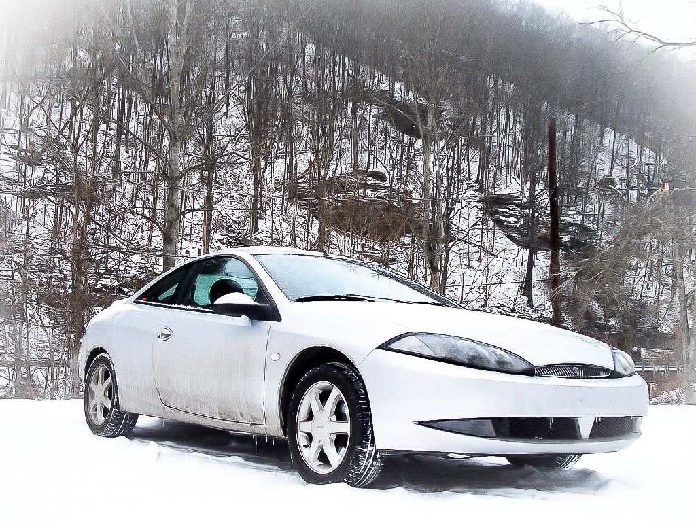
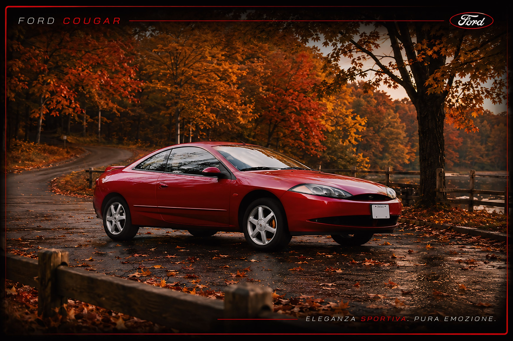

FORD COUGAR
Questo sito vuole essere un punto di riferimento per tutti quegli utenti italiani appassionati, o anche solo incuriositi, dalla particolarissima Ford Cougar.
In Italia venne distribuita a partire dal secondo semestre del 1999 in un unico allestimento (2.5 V6 cambio manuale a 5 rapporti) ed abbandonò il mercato nella breve estate del 2001, con meno di 1200 esemplari venduti.
Pur non avendo riscosso il successo commerciale sperato nel nostro Paese, questo risultato ha contribuito a rendere la Cougar una vettura rara e ricercata dagli appassionati.
Grazie alla disponibilità internazionale di ricambi e componenti, mantenere e restaurare una Cougar è oggi molto più semplice rispetto al passato. La forte presenza di appassionati in Europa e negli Stati Uniti permette ancora di reperire documentazione tecnica, accessori e numerosi componenti originali o aftermarket.
Con una base prestazionale di 170 cavalli, un baule da 410 litri espandibile fino a circa 930 litri e il sistema di sospensioni posteriori indipendenti Quadralink derivato dalla Mondeo, la Cougar rappresenta ancora oggi un'interessante combinazione tra comfort, praticità e piacere di guida.
Le sue dimensioni relativamente compatte e la particolare configurazione da coupé quattro posti la rendono adatta sia all'utilizzo quotidiano sia ai viaggi più lunghi. L'abitacolo offre spazio sufficiente per una famiglia non numerosa, mentre il vano bagagli rimane uno dei punti di forza del progetto.
Elegante nelle linee ma allo stesso tempo sportiva nell'impostazione, la Cougar conserva ancora oggi una personalità unica che la distingue dalle altre coupé della sua generazione.
Ford Cougar Club Italia nasce con l'obiettivo di raccogliere e preservare informazioni, documentazione tecnica, materiale storico e curiosità dedicate a questa vettura. Attraverso il sito e la community vogliamo contribuire a mantenere viva la memoria di una delle Ford più originali prodotte tra la fine degli anni Novanta e l'inizio degli anni Duemila.
